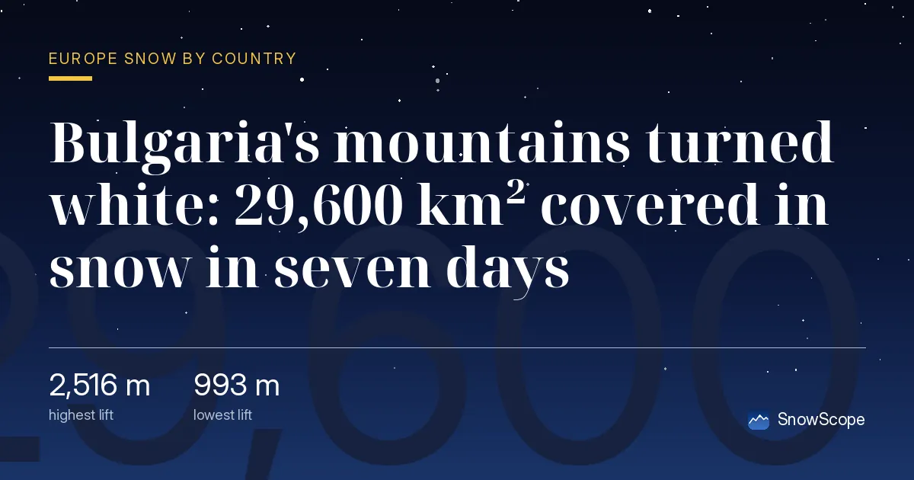

Bulgaria's mountains turned white: 29,600 km² covered in snow in seven days
Bulgaria's mountains have transformed in a week. Snow now covers 30,390 km² of the country—97 percent of the mapped area—after a dramatic jump from just 770 km² seven days ago. Bansko leads all resorts with 45 cm of new snow in the past 72 hours.
See the live snow forecast for Bansko in the SnowScope appSnow depth, powder alerts and the 3D map, free.
One week, complete change
A week ago, snow was scarce in Bulgaria. Only 770 km² showed white on the map. Yesterday it was 6,880 km². Today it is 30,390 km². This jump—29,620 km²—is not normal for late November in the dry mountains of the Balkans. A front moved in hard and fast.
Bansko now leads the resorts with 45 cm depth and 41 cm of new snow in the last three days. Borovets sits second at 37 cm, also with strong fresh snow at 35 cm over three days. Kartala has 29 cm. The gap between top and middle is clear: elevation and location matter when weather hits like this.
| Day | White area | Most new snow in 3 days | Deepest resort |
|---|---|---|---|
| Sunday 22 November | 420 km² | 3 cm | Bansko |
| Monday 23 November | 1,860 km² | 11 cm | Borovets |
| Tuesday 24 November | 1,370 km² | 8 cm | Bansko |
| Wednesday 25 November | 1,370 km² | 10 cm | Bansko |
| Thursday 26 November | 7,370 km² | 1 cm | Vitosha |
| Friday 27 November | 6,920 km² | 6 cm | Bansko |
| Saturday 28 November | 30,390 km² | 34 cm | Bansko |

Where the snow fell hardest
The Rila Mountains got the most. SnowScope shows 52 cm of new snow there in 72 hours—more than anywhere else in the country. The Pirin Mountains received 46 cm, and the Balkan Mountains 44 cm. These three ranges form a ridge that runs south to north through Bulgaria and caught the full force of the system.
Height matters. At 2,500 m and above, the map shows 40 cm average depth with full cover. Between 2,000 and 2,500 m, 24 cm is typical. At 1,500–2,000 m, 15 cm. Below 1,000 m the snow thins fast, and at 500–1,000 m only 9 cm lies on the ground. The snow line is at 600 m, so low valleys are still bare.

The numbers tell the story
In 24 hours alone, the SnowScope map recorded up to 29 cm of fresh snow at the highest peak stations. In 72 hours, 34 cm fell in the wettest spots. That is real snow for November in mountains that see less than 100 days of snow a year on average. The area covered by at least 5 cm of new snow over three days spans 25,950 km²—nearly the whole mapped region.
Yesterday to today, the snow-covered area grew by 23,510 km². The trend data shows how fast it happened: on November 26, only 1,370 km² had snow; by November 28, 30,390 km². The system built quickly and held.
What comes next
More snow is forecast. Tomorrow, November 29, is the snowiest day ahead, with up to 20 cm expected. That will add to what is already on the ground. Over the next three days, Bansko can expect 18 cm more; Borovets 16 cm; Чепеларе 19 cm. The map shows that 25,950 km² will stay under active snowfall during this period.
After December 1, the forecast quiets. The next seven days show a maximum of 22 cm, but it will be spread thin across time and space. Early December is often dry in the Balkans. The ski season is starting on strong foundations here.
How the heights stack up
The elevation bands reveal the whole picture. Snow cover is 100 percent between 1,000 and 2,500 m. Below 1,000 m, it drops to 95 percent—some low areas and passes are still bare. Above 2,500 m, the depth is greatest: 40 cm on average. This is good skiing snow for November, though not deep by winter standards.
Bansko tops the resort table at 2,516 m. Borovets reaches 2,538 m. Both have the advantage of height. Kartala sits lower at 2,245 m but still has 29 cm. Čepelàre and Malyovista are lower still and show thinner cover—23 cm and 23 cm—but both got fresh snow in the last three days and will benefit from tomorrow's forecast storm.
Context from the region
Bulgaria's neighbours tell a different story. Romania's mountains are only 56 percent white, with just 39 cm at the leader Șureanu. Serbia is at 100 percent cover but with shallower depths—22 cm at Kopaonik. Bulgaria caught the main system. Its neighbours got the edges.
In the dry mountains, this kind of rapid snow arrival is a gift. It fills reservoirs and sets up the winter season. The SnowScope map shows the full extent of this week's change. Use it to plan. The best snow is highest; the most stable snow is freshest.
Tips for skiers
- Bansko and Borovets have the deepest snow and the most fresh powder. If you are heading out, go high: above 2,000 m the snow is consistent and deep.
- Tomorrow (November 29) brings another 20 cm of new snow. Wait if you can, or go early in the day before it gets tracked out at lower elevations.
- Below 1,500 m, rocks may still be close to the surface under the thin new cover. Stay on piste or check local conditions before going off.
- Check the official avalanche bulletin before any off-piste skiing. Fresh, heavy snow on steep slopes after a rapid buildup can slide.
- The snow is wet and heavy after such a fast front. Early morning is better than afternoon on exposed slopes.
About these numbers
Resort snow depths are the deepest snow on the resort's upper slopes on the date shown; they are estimates for an area, not a measurement at one point. Forecasts can change. Always read the official avalanche bulletin before going off-piste.
Cite this report
For research, teaching or the press: the numbers and charts are free to reuse under CC BY 4.0 with this citation.
SnowScope (2026), Bulgaria's mountains turned white: 29,600 km² covered in snow in seven days, https://snowscope.app/blog/en/2026/11/bulgaria-snow-cover-gain-this-week-28-november-2026.html, accessed 2026-11-28
SnowScope (Atlas Labs). (2026, November 28). Bulgaria's mountains turned white: 29,600 km² covered in snow in seven days. SnowScope snow reports. https://snowscope.app/blog/en/2026/11/bulgaria-snow-cover-gain-this-week-28-november-2026.html
BibTeX
@misc{snowscope2026bulgariasnowcovergainthi,
author = {{SnowScope (Atlas Labs)}},
title = {Bulgaria's mountains turned white: 29,600 km² covered in snow in seven days},
year = {2026},
month = nov,
howpublished = {\url{https://snowscope.app/blog/en/2026/11/bulgaria-snow-cover-gain-this-week-28-november-2026.html}},
note = {Published 2026-11-28 12:13 UTC; accessed 2026-11-28}
}· CC BY 4.0 · Methods, data and tools →
Bansko: snow and temperature by height, this winter vs last (tools) →
Follow Bansko
Free: a message when fresh snow is coming, and the forecast every morning.
More snow reports

Tornik on Zlatibor had up to 39 cm on its upper slopes on 15 November 2026; by Wednesday it had melted. Kopaonik barely turned white. The week day by day and what comes next.

Savin Kuk above Žabljak picked up 22 cm of snow from 13 to 19 November and still has 6 cm today. Kolašin 1450 and 1600 are bare. The week day by day, and the next chances.

Up to 30 cm of snow fell on northern Velebit and Bjelolasica on Friday 13 November 2026. By Tuesday it was gone. Day by day, what the mountains kept, and when snow comes back.